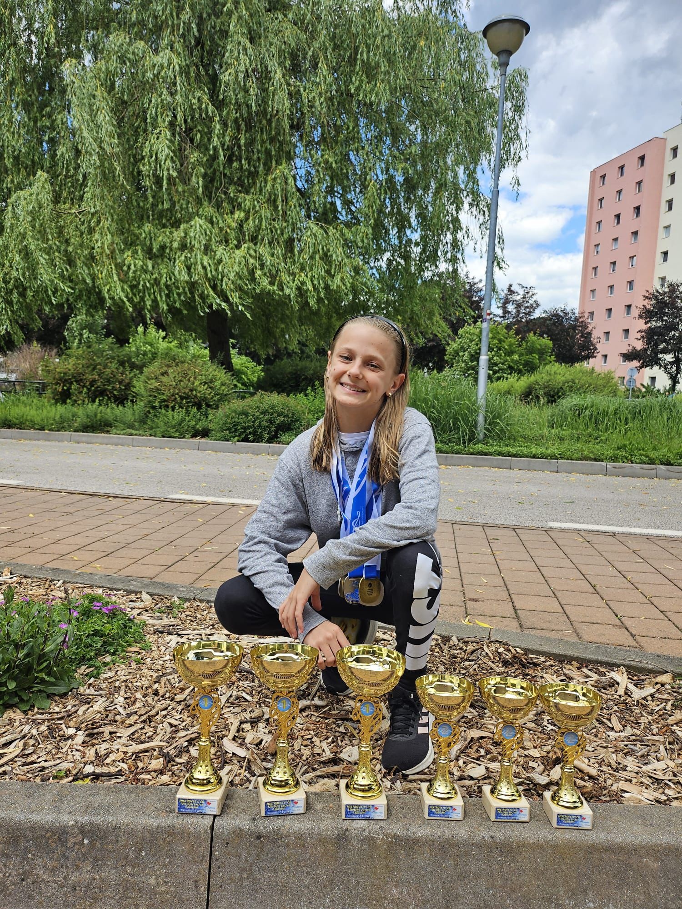

TJ KIN České Budějovice
Plaveme pro vítězství i pro radost
Jihočeský plavecký oddíl s tradicí od roku 1966
Scrolluj
TJ KIN České Budějovice
Jihočeský plavecký oddíl s tradicí od roku 1966

Ročník 2014
Letošní sezóna patřila Ele. Na Letním MČR srazila čas pod hranici rekordu České republiky – výkon, který nemá ve své věkové kategorii obdoby.
🥇 Rekord České republiky.jpg)
Ročník 2014
Tři zlaté medaile na Letním MČR. Tři. Každý závod jiná trať, stejný výsledek – nejvýše na stupních vítězů.
🥇 3× zlatá na MČR
Ročník 2012
Praha – Podolí, červen 2026. Čtyři starty za Jihočeský kraj na největší sportovní akci pro mládež v ČR. Sofie tam byla.
🏅 ODM 2026 – 4 disciplínyKIN v číslech
Každý metr v bazénu je krok blíž ke svému nejlepšímu výkonu. Tréninky, závody, parta — to je KIN.
Highlights sezóny
Přidej se k nám
Jsme otevřený oddíl pro děti i dospělé. Závodní plavání, kondiční plavání, nebo jen dobrá parta — místo je pro každého.
Chci vědět víc